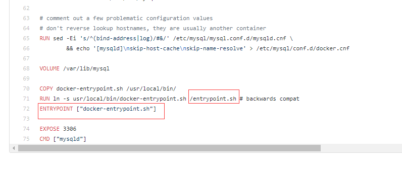
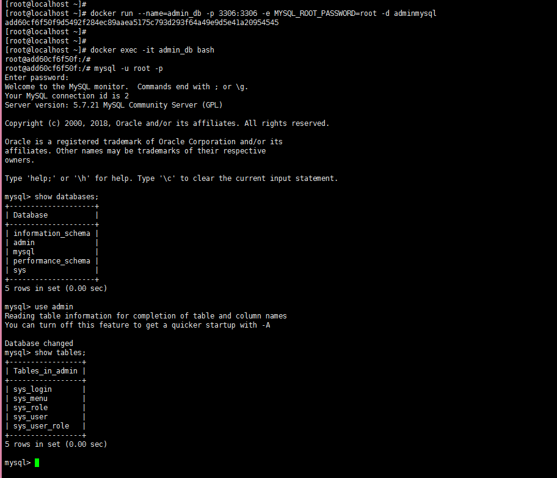
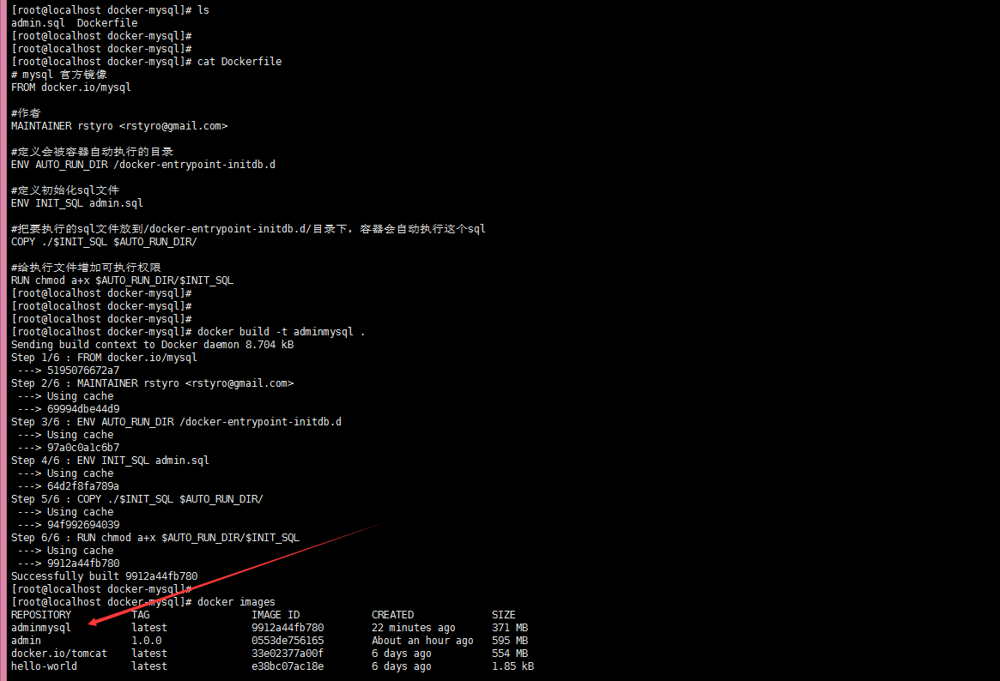

docker 启动mysql时自动执行脚本
上次已经运行了一个 tomcat 我们还需要一个数据库，docker 运行一个mysql 是很简单的比如
docker run -d --name testmysql -p 3306:3306 -e MYSQL_ROOT_PASSWORD=root -e MYSQL_DATABASE=admin mysql |
- MYSQL_ROOT_PASSWORD=root，指定 root 用户名密码 root
- MYSQL_DATABASE=admin 容器运行时创建一个数据库名为 admin
但是这样只能获得一个空的数据库，我们需要有数据的数据库，so
其实mysql的官方镜像是支持这个能力的，在容器启动的时候自动执行指定的sql脚本或者shell脚本，我们一起来看看mysql官方镜像的Dockerfile，如下图：

已经设定了ENTRYPOINT，里面会调用/entrypoint.sh这个脚本，我们把镜像pull到本地，再用docker run启动起来，进入容器看看里面的entrypoint.sh这个脚本的内容，有一段内容就是从固定目录下遍历所有的.sh和.sql后缀的文件，然后执行，如下图：

搞清楚原理了，现在我们来实战吧
一、创建 Dockerfile 文件
# mysql 官方镜像 |
二、admin.sql 文件
DROP DATABASE IF EXISTS `admin`; |
三、生成新的mysql镜像
docker build -t adminmysql . |
四、启动
现在启动是可以的，但是呢有一个问题，因为mysql的编码默认是瑞典latin1，我们要把改成utf8 或者utfmb4
my.cnf
[mysqld] |
上面的配置就和mysql 的配置是一样的，可以按照你的需求来配，下面就是启动容器的命令
# 默认密码： root,我们要挂载一个my.cnf 的配置文件 |
查看容器数据库是否有数据

不错是有数据的。
我的命令过程
